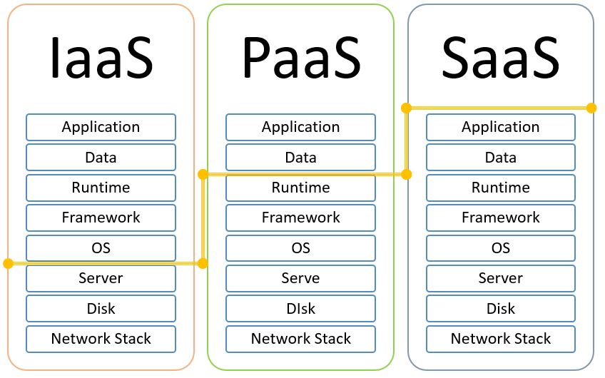

Modeli pružanja usluga
Modeli pružanja usluga putem interneta dijele se s obzirom na to koliko korisnik može utjecati na uslugu koju dobiva.
Najopširnije kategorije u koji većina oblaka spada su:
Ove tri vrste ponekad se nazivaju i „računalom za oblakˇ jer se jedna na drugu nadograđuju.
Noviji model pružanja usluga je tzv. Pozadina kao usluga.
 Slika prikazuje razliku u odgovornosti pružatelja usluge i korisnika, iznad žute crte su dijelovi za koje je odgovoran korisnik, dok je ispod crte ono za što je pružatelj usluga odgovoran.
Iz slike se može zaključiti da u IaaS-u korisnik ima puno veću slobodu prilagoditi usluge sebi nego što je to moguće u PaaS-u, a pogotovo IaaS-u.